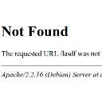

 A 404 http status code means that no document could be found at the given URL. The reason could be a misspelled URL or moved content.
{kind=link}
Anyway, the user needs help now. The standard error page doesn't provide much information, so you should create a custom one.
If you like more information, just Google for "custom 404 page".
How to create a custom 404 error page
Simply add the following line to your .htaccess file:
ErrorDocument 404 /notfound.php
(This will work only on an Apache webserver, of course).
Now you have to create a notfound.php file. This file should provide the following information:
- Tell the user that he typed a wrong URL or that the link pointed to a target which doesn't exist
- Provide a search box
- Provide a link to a graphical sitemap
- Provide some funny / interesting content
- Make sure that a 404 http status code is still returned after your changes
Good examples
- 60 Really Cool And Creative Error 404 Pages
- 36 Cool Custom Error 404 Pages
- 404 Error Pages: Reloaded